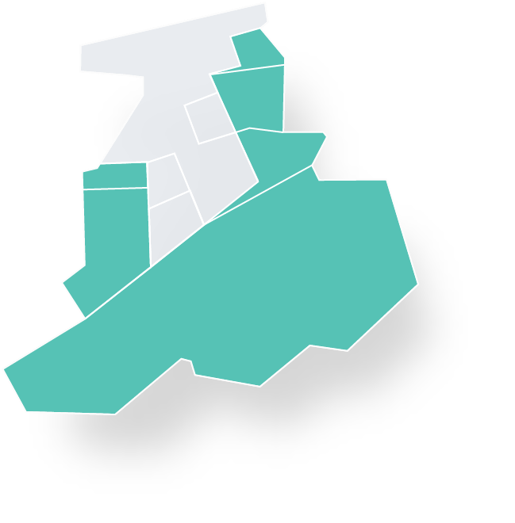
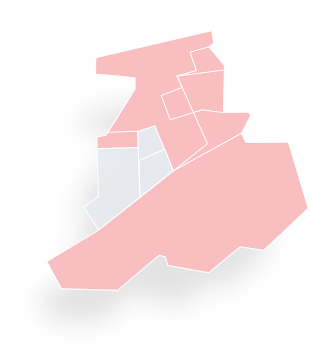

about us
Where music and place are connected.
서초음악문화지구는 문화공간, 예술인, 구민이 하나로 연결되어, 다양한 음악 문화가 만들어지는 일상 속 즐거움의 공간입니다.

facilities 01
누구나 손쉽게 클래식을 즐길 수 있는 공간, 공연시설.
서초음악문화지구 공연시설에서는 누구나 쉽게 클래식을 즐길 수 있도록 26개의 공연시설에서 다양한 방식의 클래식기획 공연을 진행하고 있습니다.
클래식다방 자세히보기
facilities 02
facilities 02 나를 위한 악기를 만나는 공간, 악기시설.
서초음악문화지구에는 클래식 악기를 전문적으로 제작, 수리, 판매하는 96개의 악기시설이 있습니다.
클래식악기 탐구생활 자세히보기


facilities 03
예술인의 자유로운 창작을 위한 공간, 복합시설.
서초음악문화지구에는 청년 예술인의 창작 활동 지원을 위해 조성된 63개의 연습시설과, 전시 활동을 위해 조성된 10개의 전시시설, 15개의 식음시설이 있습니다.
서리풀청년아트센터 대관신청 자세히보기 서리풀청년아트센터갤러리 자세히보기
special for
 Variety
Variety
Value points
Connected
문화공간-예술인-구민을 연결하는
Realizing
예술인의 꿈과 도전이 실현되는
Variety
다양한 음악 문화가 만들어지는
Happiness
일상 속에서 즐거움과 행복을 느끼는